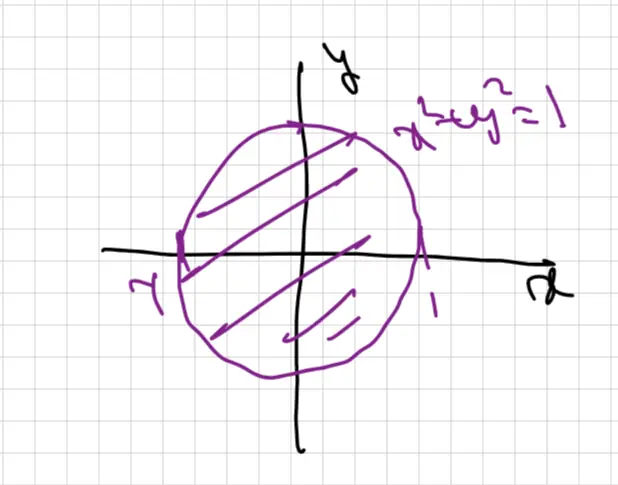
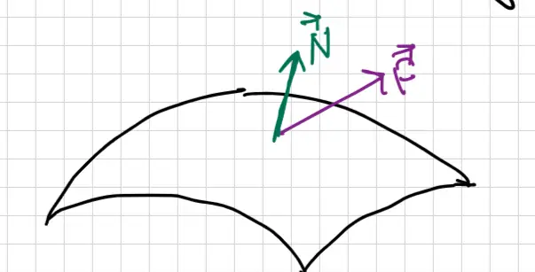
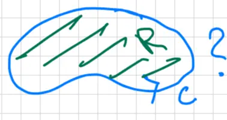

Exam 2: Review
- Exam 2: Tomorrow (Tuesday 04/21), 8 PM
-
Office Hours:
- Today (04/20): 10:15 AM – 11:45 AM (MATH 842)
- 12:15 PM – 1:15 PM (Windsor)
- Tomorrow (04/21): 12:00 PM – 1:15 PM (MATH 842)
- No Class on Friday (04/24)
Accessible transcription generated on 4/20/2026
Objective: \( f(x, y) = 2x + 3y + 2 \)
Constraint: \( g(x, y) = 2x^2 + 5xy + 4y^2 = 28 \)
Lagrange Multipliers: \( \vec{\nabla} f = \lambda \vec{\nabla} g \rightsquigarrow \langle f_x, f_y \rangle = \lambda \langle g_x, g_y \rangle \)
Divide equation (1) by equation (2):
\[ \frac{2}{3} = \frac{4x + 5y}{5x + 8y} \]
\[ 10x + 16y = 12x + 15y \]
\[ y = 2x \]
Plug into equation (3):
\[ 2x^2 + 5x(2x) + 4(2x)^2 = 28 \]
\[ 2x^2 + 10x^2 + 16x^2 = 28 \]
\[ 28x^2 = 28 \]
\[ x = \pm 1 \]
Points: \( (1, 2) \) and \( (-1, -2) \)
Evaluate the objective function at these points:
![A Cartesian coordinate graph showing the region of integration. The x-axis is labeled from 0 to 1. A blue curve is plotted, defined by the equation y = sqrt(x), which is also labeled as x = y squared. A horizontal blue line is drawn at y = 1. The region bounded between the y-axis (x=0), the horizontal line y=1, and the curve x = y squared is shaded with diagonal lines. A purple horizontal line segment with markers at both ends is drawn across the shaded region at a representative height 'y', indicating a horizontal slice starting at the y-axis (x=0) and ending at the curve (x=y squared). This visualizes the new integration limits for x.](img/exam2review-1.webp)
![Coordinate plane diagram showing a region of integration in the second quadrant. The x and y axes are clearly labeled. A quarter-circle region with a radius of 1 is shaded with diagonal blue lines, extending from the positive y-axis to the negative x-axis. A red radius line starts from the origin (0,0) and extends to a point on the circular arc. A red curved arrow indicates the angle theta, starting from the positive x-axis and rotating counter-clockwise to the red radius line, showing that the angular range for this region is from pi/2 to pi.](img/exam2review-2.webp)
Based on the limits of the original double integral, we identify the region in Cartesian coordinates as:
\[ -\sqrt{1-y^2} \leq x \leq 0, \quad 0 \leq y \leq 1 \]To determine the region's geometry for the polar conversion, we analyze the lower boundary of \( x \):
\[ -\sqrt{1-y^2} = x \] \[ x^2 + y^2 = 1 \]Using the visual representation from the diagram, we establish the limits of integration in polar coordinates:
The standard substitutions for polar coordinates are applied:
\[ dx dy = r dr d\theta \] \[ x^2 + y^2 = r^2 \]Substituting these values into the integral and evaluating the result:
\[ \int_{\frac{\pi}{2}}^{\pi} \int_{0}^{1} (r^2)^{1/2} \cdot r \, dr d\theta = \frac{1}{3} \cdot \frac{\pi}{2} = \frac{\pi}{6} \]![A 3D coordinate system diagram showing a sphere and a cone. The sphere, defined by \( x^2 + y^2 + z^2 = 4 \), has a radius of 2 and is centered at the origin. An upward-opening cone, defined by \( z = \sqrt{3x^2 + 3y^2} \), intersects the sphere. The volume shared by the interior of the cone and the sphere is shaded with horizontal lines. A red vertical line segment with points at the boundary indicates the z-bounds for a point within the region, extending from the cone surface up to the spherical cap. Dashed lines project the circular intersection of the cone and sphere onto the xy-plane.](img/exam2review-3.webp)

Given the Cartesian equation for the cone boundary:
\[ z = \sqrt{3(x^2+y^2)} \]Using spherical coordinate substitutions:
Substituting these into the cone equation gives:
\[ \rho \cos \phi = \sqrt{3(\rho^2 \sin^2 \phi)} \] \[ \cos \phi = \sqrt{3} \sin \phi \] \[ \tan \phi = 1/\sqrt{3} \] \[ \Rightarrow \phi = \pi/6. \]
\(C: \vec{r}(t), \quad a \le t \le b\)
Scalar Line Integral:
\[ \int_C f \, dr = \int_a^b f(\vec{r}(t)) |\vec{r}'(t)| \, dt \]Note: \(f\) is a scalar.
Vector Line Integrals:
Tangential component:
\[ \int_C (\vec{F} \cdot \vec{T}) \, dr \]Normal component:
\[ \int_C (\vec{F} \cdot \vec{N}) \, dr \]Note: The dot products \((\vec{F} \cdot \vec{T})\) and \((\vec{F} \cdot \vec{N})\) are scalars.
Choice for \(\vec{N}\): The normal vector \(\vec{N}\) is defined as the vector \(90^\circ\) counter-clockwise (CCW) from the tangent vector.

\(S: \vec{r}(u,v), \quad u, v \in R \subset \mathbb{R}^2\)
Scalar Surface Integral:
\[ \underbrace{\iint_S f \, dS}_{\text{Surface Integral}} = \underbrace{\iint_R f(\vec{r}(u,v)) |\vec{r}_u \times \vec{r}_v| \, dA}_{\text{Double Integral}} \]Vector Surface Integral (Flux):
\[ \iint_S \vec{F} \cdot d\vec{S} = \iint_S (\vec{F} \cdot \vec{N}) \, dS \]Note: The dot product \((\vec{F} \cdot \vec{N})\) is a scalar.
\(\vec{N} = \text{unit normal pointing upwards or outwards}\)
For scalar functions, we use the definition.
For vector fields, the primary question to address is: is \( C \) a closed curve in 2D?

Use Green's Theorem:
\[ \oint_C \vec{F} \cdot \vec{T} dr = \iint_S \text{2D curl } dA \] \[ \oint_C \vec{F} \cdot \vec{n} dr = \iint_S \text{2D div } dA \]Check: is \( \vec{F} = \vec{\nabla} \phi \) (conservative?)
Yes (Conservative): Use FTCLI (Fundamental Theorem of Calculus for Line Integrals)
\[ \int_C \vec{\nabla} \phi \cdot d\vec{r} = \phi(\text{end}) - \phi(\text{start}) \]No (Not Conservative): Use the definition.
Let \( R \) be a triangle with vertices \( (0,0), (2,0), (1,1) \) and \( C \) be its boundary oriented counter-clockwise (CCW).
Evaluate: \[ \int_{C} \cos^3(x) \, dx + e^x \, dy \]
![Line graph on a coordinate grid illustrating the triangular region R. The triangle's vertices are at (0,0), (2,0), and (1,1). The boundary C is marked with arrows showing a counter-clockwise orientation. The left boundary line is labeled y = x, and the right boundary line is labeled y = -x + 2. The interior of the triangle is shaded with horizontal lines. A pink horizontal line segment is drawn across the region at a constant y-level, spanning from the left boundary x = y to the right boundary x = 2 - y, visually representing the limits of integration for x. Points (0,0) and (2,0) are labeled on the x-axis, and the peak vertex (1,1) is also labeled.](img/exam2review-8.webp)
Since \( C \) is a simple closed curve, we can apply Green's Theorem. Define the vector field: \[ \vec{F} = \langle \cos^3 x, e^x \rangle \]
By Green's Theorem: \[ \int_{C} \vec{F} \cdot d\vec{r} = \iint_{R} (\text{curl}_z \vec{F}) \, dA \]
Calculating the integrand (\( g_x - f_y \)): \[ \frac{\partial}{\partial x}(e^x) - \frac{\partial}{\partial y}(\cos^3 x) = e^x - 0 = e^x \] So the integral becomes: \[ \iint_{R} e^x \, dA \]
To set up the double integral over region \( R \), we determine the bounds for a Type II region (integrating with respect to \( x \) first): \[ y \le x \le 2 - y \] \[ 0 \le y \le 1 \]
The integral is: \[ \int_{0}^{1} \int_{y}^{2-y} e^x \, dx \, dy \]